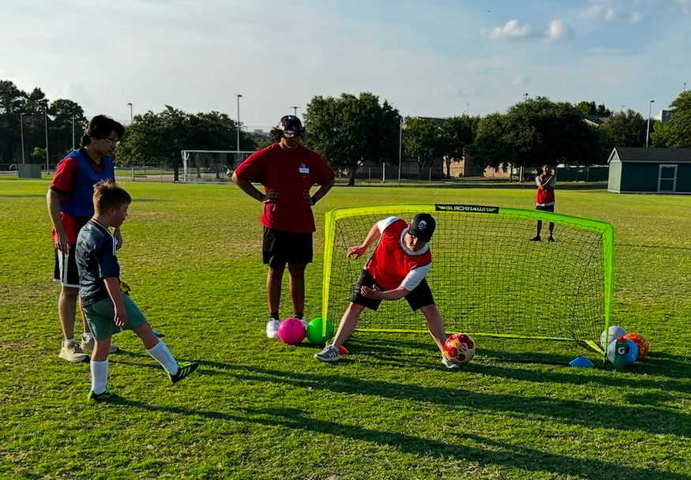
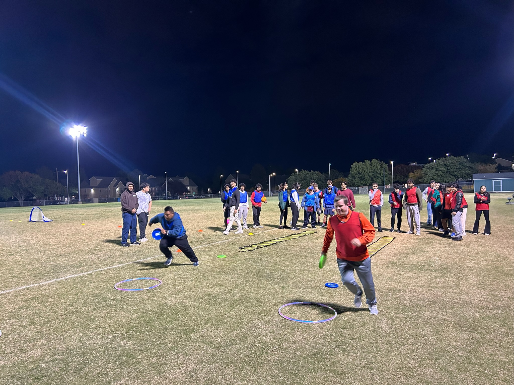

Creating a supportive and inclusive environment for players to thrive both on and off the field
Heroes United FC is a non-profit organization, providing soccer camps that are specifically designed for individuals with Down Syndrome. The sessions last approximately 90 minutes and introduce basic soccer skills that will eventually be developed over the course of a season. Scrimmages will be held at the end of the session, giving the participants a chance to practice their new skills on the field with their friends. Awards will be passed out to recognize players who showed super effort during the session!
Volunteers are assigned to each player to help them through the session, with some serving as coaches that will lead the practice. There will be consistent hydration breaks to ensure all players and volunteers are drinking enough water.
Heroes United FC will serve as a strong community open to all individuals with Down Syndrome to unite together in their common love for soccer, and help each other grow their passion for the sport. During the program, they will make new friends that will join them along their journey to becoming soccer superstars. Whether it be through practice drills or running games, soccer is a great medium for participants to create new social connections and strengthen their physical health. We look forward to building a huge community of soccer fans dedicated to growing the game for others.
You can sign up by clicking the "Player Sign-Up" or "Volunteer Sign-Up" buttons on our homepage. Registration is quick and easy!
Our sessions are primarily held at the UT Dallas soccer fields. You will receive the exact location details upon registration.
No, volunteers do not need any prior soccer experience. Training will be provided to guide them through the process.
No, players do not need any prior soccer experience. Our program is designed for beginners and experienced players alike!
No, there is no age requirement. Players of all ages are welcome to participate.